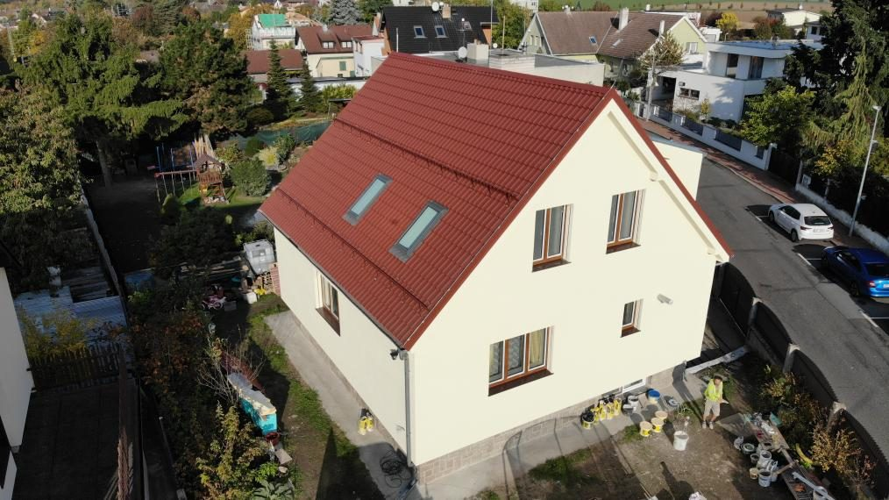
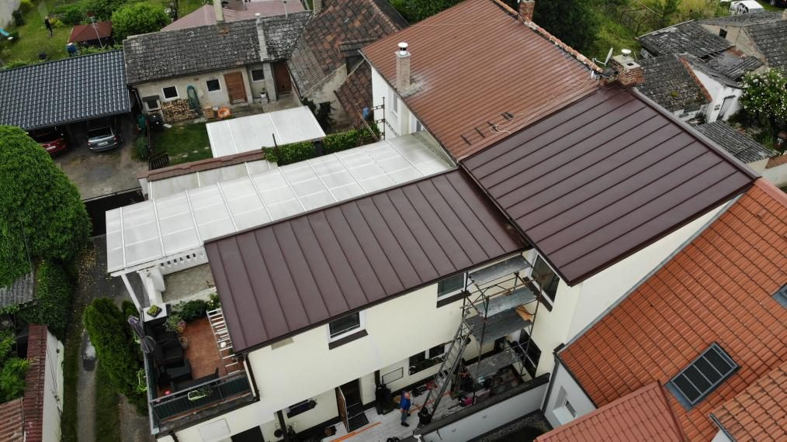
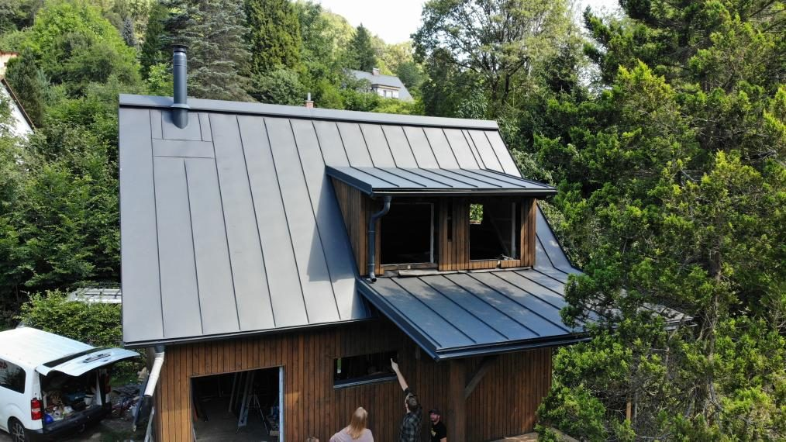
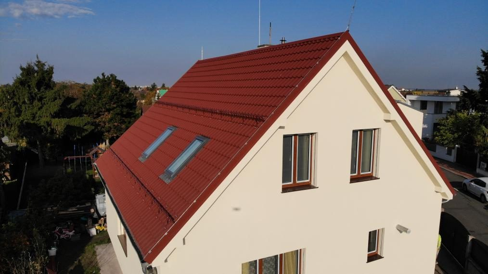
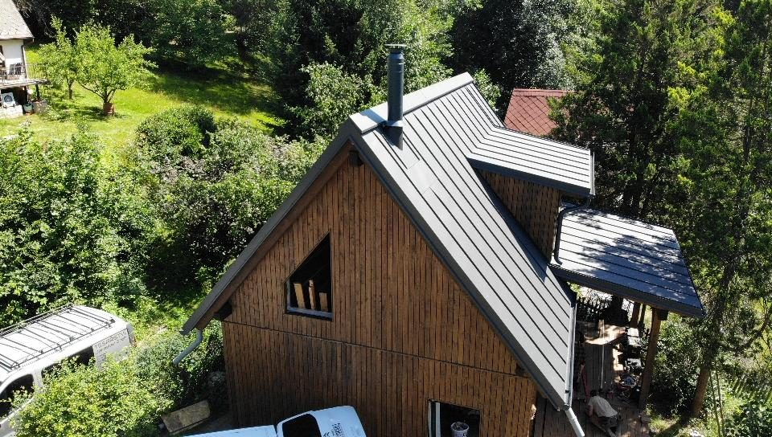
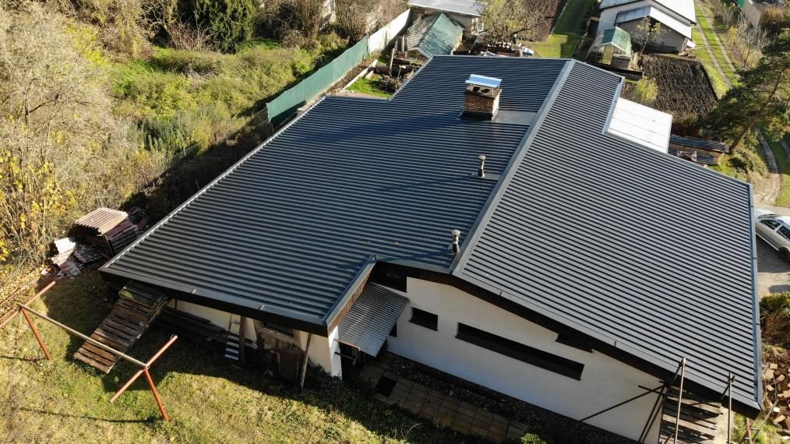
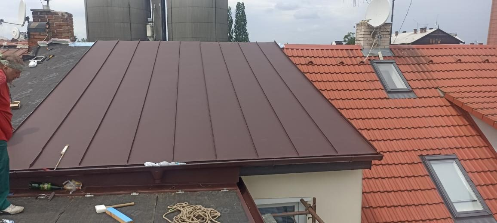
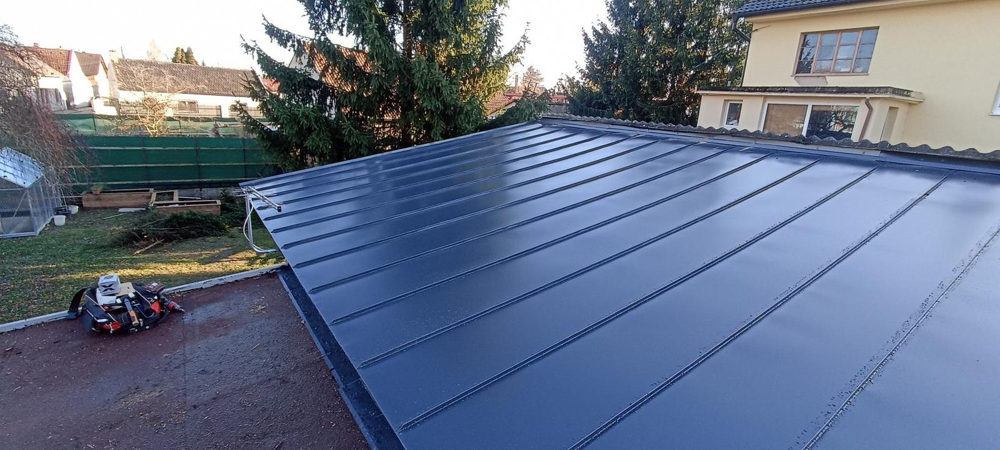
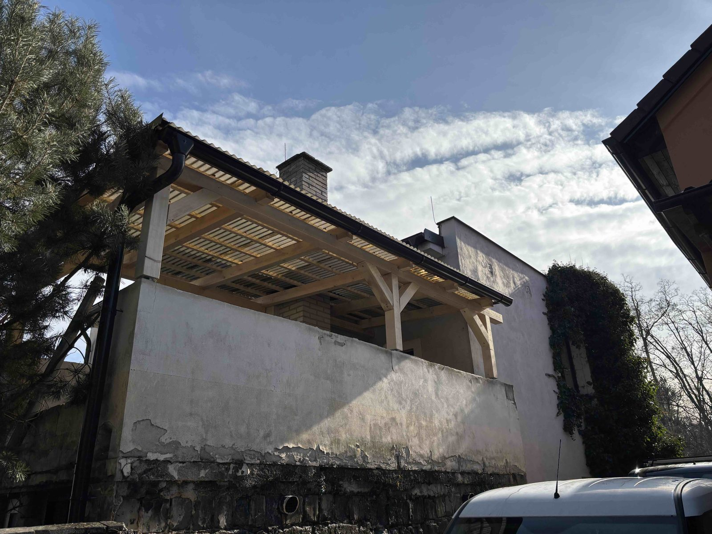

Střechy
Nové střechy, rekonstrukce, výměna krytiny, klempířské prvky, izolace, okapy. Pálená, betonová i plechová krytina.
Střechy, pergoly, rekonstrukce a kompletní stavební práce. Vlastní parta, čisté řemeslo a záruka 2 roky.
Specializujeme se na střechy a pergoly, ale zvládneme i kompletní rekonstrukci nebo dostavbu podkroví.
Nové střechy, rekonstrukce, výměna krytiny, klempířské prvky, izolace, okapy. Pálená, betonová i plechová krytina.
Komplet dřevěné pergoly na míru. Zastřešení teras, montáž kompletně na klíč. Jen ze dřeva — žádný hliník.
Bytová jádra, kompletní rekonstrukce domů a bytů. Bourací práce, sádrokartony, podlahy, omítky, finální úpravy.
Vestavba a zateplení podkroví, sádrokartonové konstrukce, střešní okna, parozábrany. Z půdy plnohodnotný obytný prostor.
Zděné konstrukce, přístavby, základy, betonáže. Zajistíme i řemesla, která sami neděláme — máme prověřené subdodavatele.
Napište nám, co potřebujete. Pokud to neuděláme my, doporučíme někoho, komu sami věříme.
Poptat zdarma →„Cenu si odsouhlasíme předem. Když se rozsah změní, řeknu to dřív, než začnu."
— jak to dělámBez příplatku za dopravu jezdíme v okruhu 80 km. Ostatní lokality po domluvě — nedává smysl, abys platil cestu, když jde o malou zakázku.
Výběr z dokončených zakázek. Klikněte na fotku pro zvětšení — galerii průběžně doplňujeme.









Hodnocení přebíráme přímo z našeho Google profilu — nic vymyšleného, jen reálná zpětná vazba.
„Děkuji za pergolu s dlažbou, doporučuju, děkuji.“
„S prací jsem byl velice spokojen, doporučuji.“
„Naprosto spokojen s touto firmou, děkuji za podkroví a kompletně novou střechu. 👍“
Nezávazná konzultace a cenový odhad zdarma. Stačí krátká zpráva nebo zavolat.